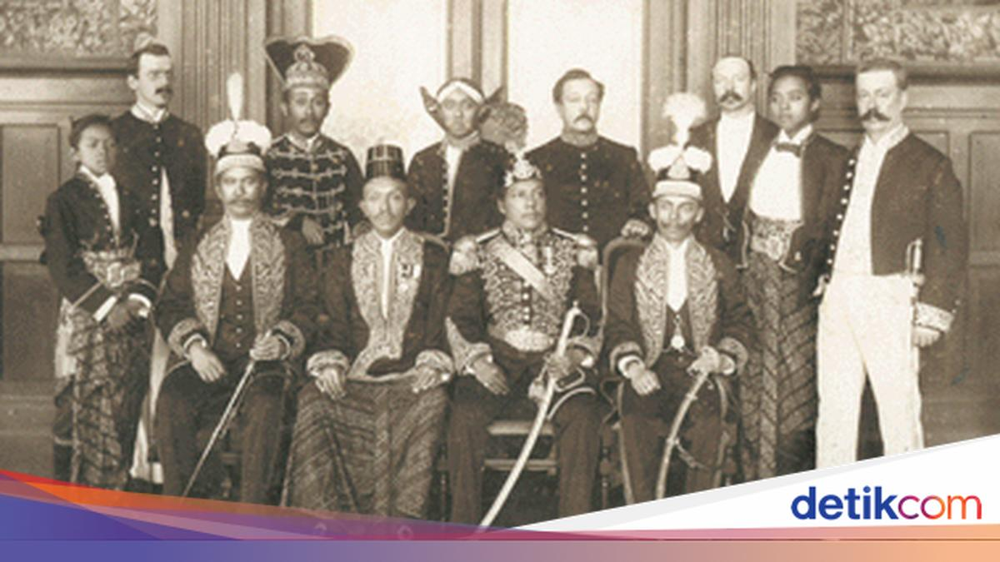

Suku Kutai
Asal-usul: Urang Kutai adalah suku Melayu asli yang mendiami pesisir dan tepian Sungai Mahakam, Kalimantan Timur, dengan pusat budaya di Tenggarong. Menurut tradisi lisan dan sejarah, leluhur mereka termasuk rumpun Melayu yang bermigrasi dari daratan Asia ribuan tahun lalu, lalu menetap di tepian Mahakam dan bercampur dengan penduduk asli setempat.
- Nama Kutai: pada awalnya bukan nama suku, melainkan nama wilayah dan kerajaan — Kerajaan Kutai Martadipura (abad ke-4, berpusat di Muara Kaman), kerajaan Hindu tertua di Nusantara yang dibuktikan prasasti Yupa peninggalan Raja Kudungga, Aswawarman, dan Mulawarman.
- Kesultanan: pada abad ke-13 berdiri Kesultanan Kutai Kartanegara di Kutai Lama, yang kemudian berpusat di Tenggarong dan memeluk Islam. Masyarakat Dayak tepian sungai yang memeluk Islam inilah yang kemudian dikenal sebagai Urang Kutai, dan mereka menyebut suku Dayak sebagai Densanak Tuha (saudara tua) karena masih satu leluhur.
- Nilai: religius, santun, dan menjunjung musyawarah.